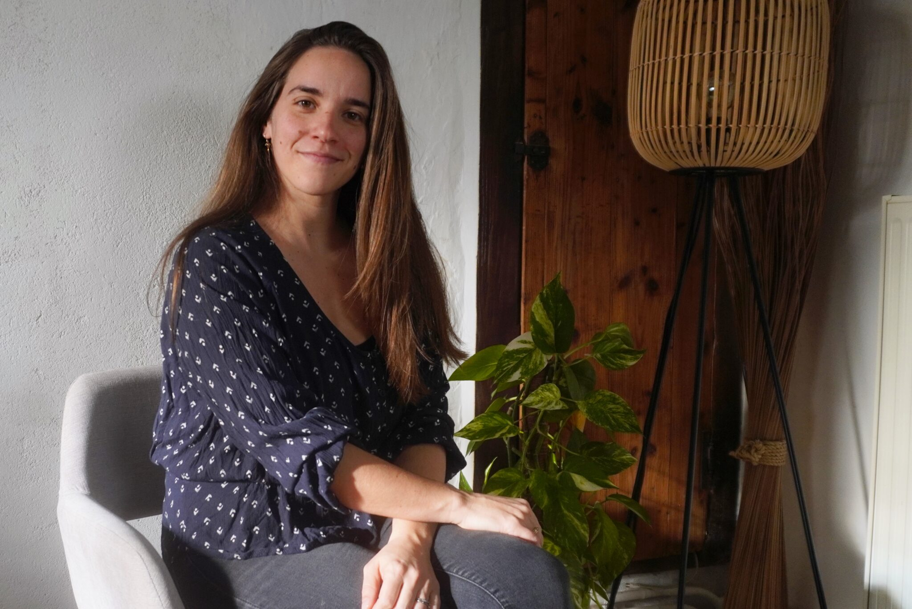
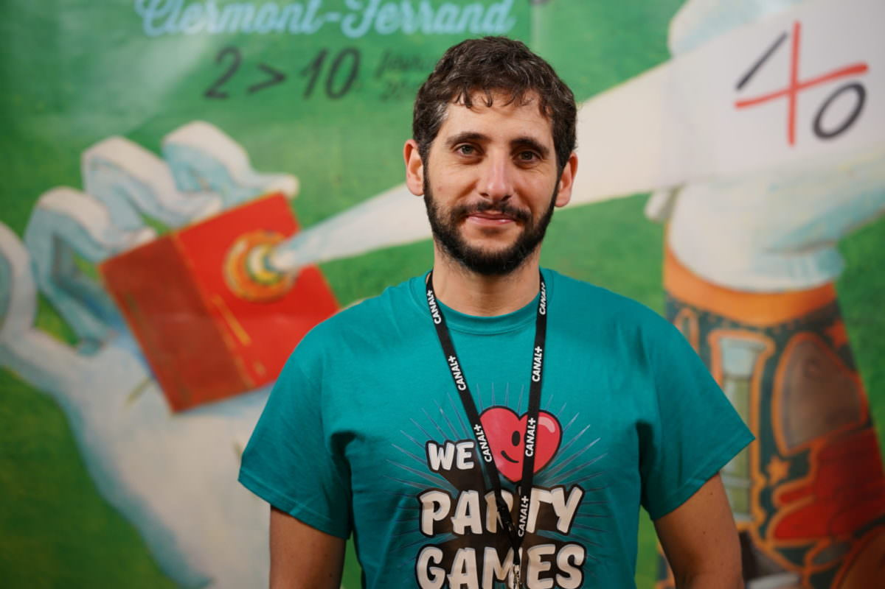
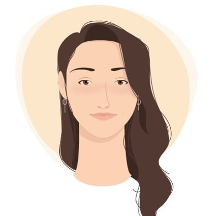
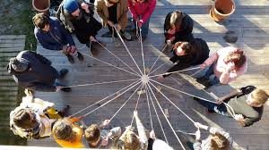
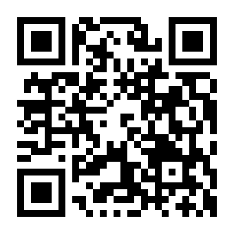

On est une "école de vie", mais pour apprendre à vivre-ensemble en stage embarqué, chacun·e se débrouille.
⚙️ 4 frictions qui reviennent
En enquêtant, en discutant avec des moniteurices, en lisant les rapports de mer, en échangeant avec les RTQ et les responsables croisière, 4 frictions reviennent majoritairement.
⚙️ Tout repose sur lae moniteurice
Donner le rythme, organiser, relancer : c'est souvent lae moniteurice qui porte tout ça seul·e.
Les stagiaires voudraient aider, mais iels n'ont pas de prise claire sur l'organisation.
🔁 Les mêmes consignes, chaque matin
Sur l'organisation collective, on donne les mêmes consignes chaque matin.
Sans repères visibles, les bonnes pratiques peinent à s'installer d'un jour à l'autre.
🧭 On avance, mais vers où ?
La semaine avance, mais les stagiaires ne voient pas toujours où iels en sont.
Difficile de sentir qu'on progresse sans jalons.
🔓 Quand ça coince, on fait comment ?
Quand ça coince entre stagiaires, c'est compliqué d'en parler sans que ça dérape.
On gère, mais on manque d'un cadre coopératif.
💡 Ça tourne autour du quotidien, non ?
Entre les moments de voile, il faut vivre ensemble en espace contraint. C'est la matière première du faire-ensemble, un super support d'apprentissage de la coopération.
Si le problème vit dans le quotidien, la réponse doit y vivre aussi.
🌱 Le principe : greffer pour faciliter, éviter d'en rajouter
Anacoluthe se branche sur les routines existantes : brief, navigation, débrief
Chaque moniteurice garde sa patte, son style d'animation
Les outils structurent, ils ne prescrivent pas
Ça allège la charge moniteurice, ça ne l'alourdit pas.
🔗 Friction → outil
⚙️ Fluidifier le quotidien → 4 rôles coopératifs inspirés de marins réels, qui distribuent l'organisation à l'équipage complet
🔁 Arrêter de répéter → 4 affiches qui créent des repères visuels et soutiennent l'autonomie
🧭 Rendre la progression visible → 7 moments clés de l'accueil au débrief final, qui structurent la semaine
🔓 Gérer les accrocs → 4 cartes joker qui rendent coopérative la gestion des situations
🧰 Dans la boîte à out's
📋
4 affiches
Découverte du jeu, routines, tableau d'équipage, marque-page LDB et leur petit mémo
🎭
4 rôles
Bosco, navigateurice, second soigneux, cambusier·ère
⏱️
7 moments
accueil, accords, rôles, brief, débrief, mi-parcours, final
🃏
4 joker
Conflit, temps mort, rediscuter les accords, retour moniteurice
Au total : 4 affiches A4 et 19 cartes A6
📅 La semaine avec Anacoluthe
J1-J2 : Poser le cadre
Anacoluthe donne un cadre et aide à installer les premiers rituels. Les affiches posent des repères visibles, les moments structurent l'accueil et les accords d'équipage.
📋 Affiches⏱️ Moments🎭 Rôles
📅 La semaine avec Anacoluthe
J3-J4 : Les stagiaires prennent la main
Les rôles tournent, les stagiaires ont des repères dans les phases d'organisation. Les affiches soutiennent l'autonomie au quotidien. L'équipage commence à fonctionner sans relance.
🎭 Rôles📋 Affiches
📅 La semaine avec Anacoluthe
J4-J5 : Frictions et émancipation
La fatigue crée des frictions, mais les stagiaires ont davantage de repères. Les joker permettent de nommer et gérer les tensions. L'équipage commence à s'émanciper des rituels formels.
🃏 Joker🎭 Rôles
📅 La semaine avec Anacoluthe
J5-J6 : Ancrer et ramener à terre
On ancre les acquis, on nomme ce qu'on a appris, on projette vers la terre. Le bon signe : les outils ne sont de moins en moins nécessaires, l'équipage coopère activement.
⏱️ Moments
🎲 Game design : les rôles
Les rôles tournent : chacun·e passe par chaque rôle, personne n'est étiqueté·e. Ça distribue la charge d'organisation à tout l'équipage.
Un marin inspirant par rôle : Moitessier, Autissier, Trochet, Edwards. Ça donne un modèle concret, une histoire à raconter, et ça rend le rôle désirable plutôt qu'administratif.
Dépersonnalisation de certains conflits : on parle du rôle, pas de la personne. Ça permet de faire des retours sans viser quelqu'un.
🎲 Game design : prévoir et transposer
Les tensions de J3-J4 sont prévisibles : vivre en espace confiné, avec peu d'intimité et de la fatigue, ça crée des frictions. C'est normal, et le dire à l'avance change tout. Les joker sont là en filet, "à la demande" si un accroc advient.
Transposable à terre : chaque carte nomme des compétences réutilisables hors du bateau : communication, entraide, anticipation, réflexivité. L'objectif final, c'est que les stagiaires repartent en sachant nommer ce qu'iels ont appris.
🤝 Anacoluthe se construit en équipage
Anacoluthe est un projet libre (CC-BY-NC-SA) : plusieurs personnes extérieures aux Glénans et au monde de la voile s'investissent bénévolement pour enrichir le jeu, chacune avec son expertise.

Aude Guittard
Psychologie

Damien Falkouska
Game design

Marie Puydebois
Design

Communauté Animacoop
Coopération
👐 À vous d'explorer
Deux kits sont sur les tables, explorez le site sur vos téléphones.
Parcourez, lisez, posez vos questions.

anacoluthe.org
🗣️ À vous de jouer (20 min)
Avec en tête votre base et votre support :
Qu'est-ce qui vous parle et pourquoi ?
Qu'est-ce qui ne marcherait pas dans votre contexte ?
Si vous deviez garder UN seul élément et l'adapter, ce serait lequel et comment ?
3 groupes de 4 - mixez croisière et multi-support
🎤 Restitution
Chaque groupe partage :
Ce qui ne marcherait pas dans votre contexte, et pourquoi
L'élément gardé + comment vous l'adapteriez
Merci !
Anacoluthe est un outil libre, sous licence CC-BY-NC-SA.
Vous pouvez le réutiliser, l'adapter, le bidouiller, le remixer.